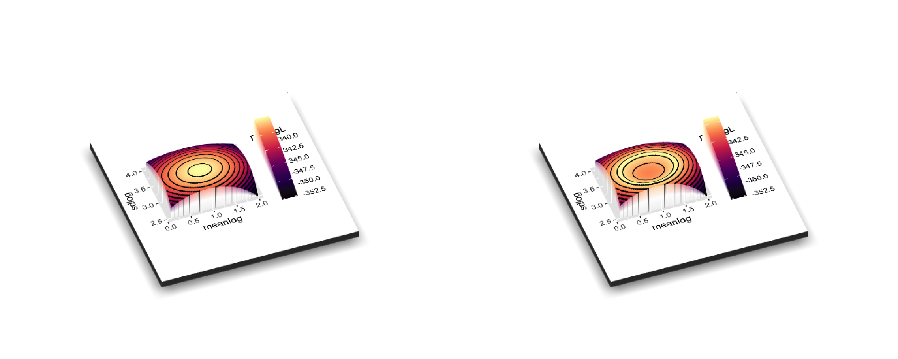
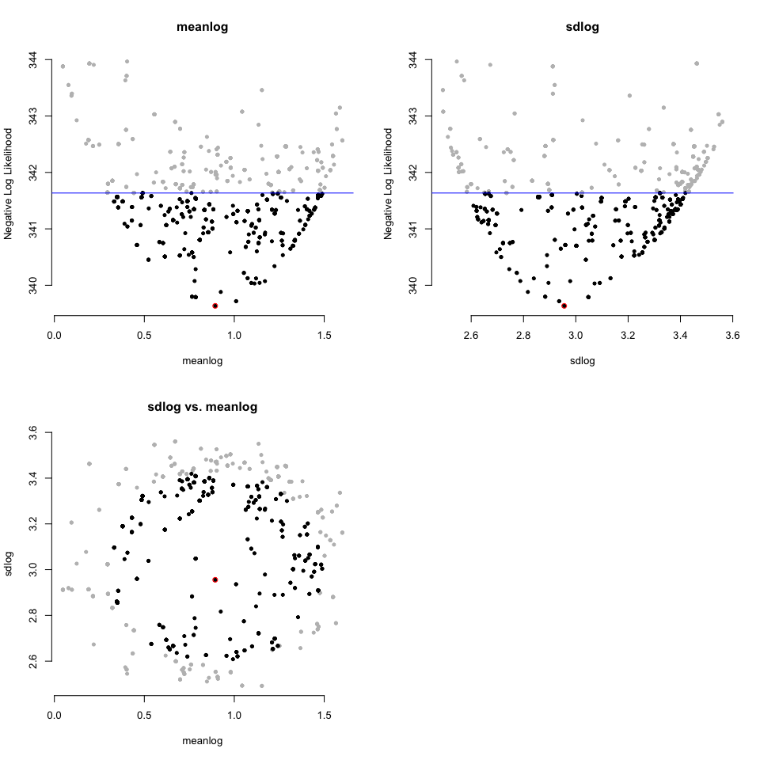

dentist is an R package to sample points around a specified distance from the maximum likelihood estimates. This should be a better way to estimate uncertainty than using the Hessian of the likelihood equation. It works by “denting” the likelihood surface to make a ridge at your desired delta lnL and then “walks” around this dented surface, sampling points.
https://bomeara.github.io/dentist/ for a website
https://github.com/bomeara/dentist for the source code
Installation
And the development version from GitHub with:
# install.packages("devtools")
devtools::install_github("bomeara/dentist")Example
Imagine we had empirical data from some distribution:
sims <- stats::rlnorm(100, meanlog=1, sdlog=3)We could write a function for the likelihood of the data and optimize this function:
# Define the likelihood function
dlnorm_to_run <- function(par, sims) {
return(-sum(stats::dlnorm(sims, meanlog=par[1], sdlog=par[2], log=TRUE)))
}
# Optimize the model given the empirical data. We guess at the starting values
optimized_results <- stats::optim(c(meanlog=.5, sdlog=1), dlnorm_to_run, sims=sims)
best_par <- optimized_results$par
best_neglnL <- optimized_results$valueThat gives us a point estimate of the best values:
print(best_par)
#> meanlog sdlog
#> 0.893797 2.955575But how confident should we be? For familiar distributions like a binomial distribution we can compute the confidence interval for a parameter estimate. For less familiar ones, we can approximate it using the curvature at the peak. Another approach is to vary one parameter at a time while holding others at their maximum likelihood estimate until the likelihood gets much worse (typically a cutoff of delta 2 log likelihood units is used). That can underestimate the uncertainty, since there could be a ridge in parameter space. A better approach would be to try many values and return all those within some specified likelihood bounds. This could be done with latin hypercubes, but it can be a large part of parameter space to explore. A different approach would be to focus on sampling points right at the boundary of “good enough.” This package does this. If a likelihood surface is a peak, this package wants to sample points around a specified height below the peak to fully sample the uncertainty. It does it by “walking” with a Metropolis-Hastings algorithm around a dented likelihood surface, so that values better than the ideal threshold are reflected back. First, to show how the original surface (left) is dented (right):

Note that for plotting, it’s shown with the regular log likelihood: typically values << 0, and higher is better. In the package, it wants you to use negative log likelihood, so it would be the mirror image of these plots (lower better).
And now to sample around that ring on the right:
library(dentist)
dented_results <- dent_walk(par=best_par, fn=dlnorm_to_run, best_neglnL=best_neglnL, nsteps=1000, print_freq=250, sims=sims)
#> [1] "Done replicate 250"
#> [1] "CI of values"
#> X1 X2 X3
#> [1,] 339.6352 0.6339612 2.626464
#> [2,] 341.6350 1.4497321 3.418966
#> [1] "Done replicate 500"
#> [1] "CI of values"
#> X1 X2 X3
#> [1,] 339.6352 0.3506638 2.608558
#> [2,] 341.6350 1.4884961 3.418966
#> [1] "Done replicate 750"
#> [1] "CI of values"
#> X1 X2 X3
#> [1,] 339.6352 0.3506638 2.608558
#> [2,] 341.6350 1.4884961 3.418966
#> [1] "Done replicate 1000"
#> [1] "CI of values"
#> X1 X2 X3
#> [1,] 339.6352 0.3326398 2.608558
#> [2,] 341.6350 1.4884961 3.418966This generates information about the confidence:
print(dented_results)
#> This ran 1000 steps looking for all points within 2 negative log likelihood units of the best parameter values.
#>
#> Parameters:
#> meanlog sdlog
#> best 0.89379698 2.955575
#> lower.CI 0.33263978 2.608558
#> upper.CI 1.48849614 3.418966
#> lowest.examined 0.04736823 2.491895
#> highest.examined 1.60055403 3.560104And also has a way to visualize the results:
plot(dented_results)
You do not need to use this package for simple distributions, but in phylogenetics, where programs like OUwie, corHMM, hisse, OUCH, and more give a point estimate, this lets you get confidence for the parameters if there’s a way to have a function where you pass in a set of parameter values and get back a negative log likelihood.